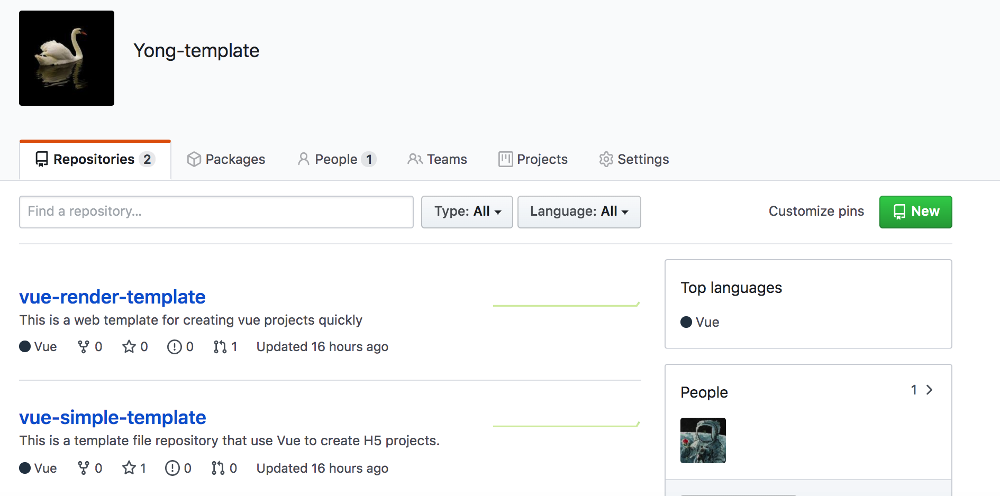

这是系列文章
前端脚手架实现 的第三篇，本文核心解决当我们通过模板来初始化项目时如何把选定版本的模板文件下载到对应文件夹中的问题。
当我们在拉取模板文件的时候，存在两种情况，一种是直接把初始化项目的模板文件下载下来保存到指定文件目录即可，另一种是模板文件需要先渲染，我们需要通过终端交互的方式来输入必要信息以完成模板文件的渲染操作，渲染完成后再下载到本地指定文件目录。模板文件是否需要渲染我们可以通过一个指定的文件来进行配置和说明。
在进行上述操作的时候，我需要通过用到一些node模块并提供两个模板仓库来供我们存放模板文件。
安装download-git-repo模块以实现下载文件的操作。
1
2
3
| $ npm install download-git-repo
let downloadGitRepo = require('download-git-repo');
|
安装并引入util模块，该模块的promisify用来把异步 Api 转换为 Promise。
1
2
3
4
| $ npm install util
const { promisify } = require('util');
downloadGitRepo = promisify(downloadGitRepo);
|
安装ncp模块用于拷贝文件到指定的目录。
1
2
3
| $ npm install ncp
const ncp = require('ncp');
|
模板下载
我在自己的 github 帐号下面创建了
Yong-Template组织，在该组织中创建了两个仓库，其中的仓库
vue-simple-template 中包含了用于创建 Vue项目的初始化项目(模板)文件，另一个仓库
vue-render-template 则需要通过终端询问的方式来先渲染再下载。

当我们通过 github 提供的 API：
https://api.github.com/orgs/Yong-template/repos 来访问组织的时候可以获取仓库相关的 JSON 文件。下面利用安装的
download-git-repo来下载项目文件。
1
2
3
4
5
6
7
8
9
10
11
12
13
14
15
16
17
18
19
20
21
22
23
24
25
26
27
28
29
30
31
32
33
34
35
36
37
38
39
|
const downloadDirectory =
`${process.env[process.platform === 'darwin' ? 'HOME' : 'USERPROFILE']}/.template`;
module.exports = {
downloadDirectory,
};
const { promisify } = require('util');
let downloadGitRepo = require('download-git-repo');
downloadGitRepo = promisify(downloadGitRepo);
const { downloadDirectory } = require('../util/constants.js');
const downloadTask = async(repo, tag) => {
const dest = `${downloadDirectory}/${repo}`;
let url = `Yong-template/${repo}`;
if (tag) url += `#${tag}`
console.log("dest", dest, "url", url);
await downloadGitRepo(url, dest);
return dest;
};
const dest = await loading(downloadTask, "download template ...")(repo, tag);
console.log("template", dest);
console.log("path.resolve(projectName)", path.resolve(projectName));
await ncp(dest, path.resolve(projectName));
|
当 create 文件中上面代码完成后，执行
Yue-cli create app指令就能够下载文件到当前目录了。
1
2
3
4
5
6
7
8
9
10
11
12
13
14
15
| wendingding:Yue-cli wendingding$ Yue-cli create app
执行 action-> create
[ '/usr/local/bin/node',
'/usr/local/bin/Yue-cli',
'create',
'app' ]
✔ fetching template ...
? please choice a template to create project ! vue-simple-template
✔ fetching tags ...
? please choices tags to create project v2.0.0
⠋ download template ...
dest /Users/文顶顶/.template/vue-simple-template url Yong-template/vue-simple-template
✔ download template ...
template /Users/文顶顶/.template/vue-simple-template
path.resolve(projectName) /Users/文顶顶/Documents/花田半亩 /Yue-cli/app
|
模板渲染
有时候用户在利用脚手架工具创建项目的时候，可能需要自己来输入描述信息、协议、和作者等信息，那么这种情况我们可以在项目的模板文件中提供一个文件用来保存这些信息，而 package.json文件中相关的字段用 ejs 模板的方式来处理，我们要做的就是在下载安装的时候，先询问用户，然后根据用户的选择来渲染并生成最终的package.json文件最后下载到本地。
我们先看下询问文件的信息和package.json文件的内容。
1
2
3
4
5
6
7
8
9
10
11
12
13
14
15
16
17
18
19
20
21
22
23
24
25
26
27
28
29
30
31
32
33
34
35
36
37
38
39
40
41
42
43
|
module.exports = [{
type: 'confirm',
name: 'private',
message: 'This register is private ?',
},
{
type: 'input',
name: 'author',
message: "Please set the author name ?",
},
{
type: 'input',
name: 'description',
message: 'Please enter description information ?',
},
{
type: 'input',
name: 'license',
message: 'Please enter license ?',
},
]
{
"name": "vue-template-simple",
"version": "0.1.2",
"private": "<%=private%>",
"scripts": {
"serve": "vue-cli-service serve",
"build": "vue-cli-service build"
},
"dependencies": {
"vue": "^2.6.10"
},
"author": "<%=author%>",
"description": "<%=description%>",
"devDependencies": {
"@vue/cli-service": "^3.11.0",
"vue-template-compiler": "^2.6.10"
},
"license": "<%=license%>"
}
|
我们把用户的选择融入到package.json模板文件中最后生成完整的package.json文件需要用到ejs模板，此外还需要安装metalsmith等模块来遍历文件夹，下面给出安装的关键指令和最终的代码。
1
2
3
| $ npm install metalsmith
$ npm install ejs
$ npm install consolidate
|
1
2
3
4
5
6
7
8
9
10
11
12
13
14
15
16
17
18
19
20
21
22
23
24
25
26
27
28
29
30
31
32
33
34
35
36
37
38
39
40
41
42
43
44
45
46
47
48
49
50
51
52
53
54
55
56
57
58
59
60
61
62
63
64
65
66
67
68
69
70
71
72
73
74
75
76
77
78
79
80
81
82
83
84
85
86
87
88
89
90
91
92
93
94
95
96
97
98
99
100
101
102
103
104
105
106
107
108
109
110
111
112
113
114
115
116
117
|
const axios = require('axios');
const ora = require('ora');
const fs = require('fs');
const ncp = require('ncp');
const path = require('path');
const inquirer = require('inquirer');
const { promisify } = require('util');
const MetalSmith = require('metalsmith');
let { render } = require('consolidate').ejs;
render = promisify(render);
let downloadGitRepo = require('download-git-repo');
downloadGitRepo = promisify(downloadGitRepo);
const { downloadDirectory } = require('../util/constants.js');
async function getRepositoryList() {
const { data } = await axios.get("https://api.github.com/orgs/Yong-template/repos");
return data;
}
const getTagList = async(repo) => {
const { data } = await axios.get(`https://api.github.com/repos/Yong-template/${repo}/tags`);
return data;
};
const loading = (fn, message) => async(...args) => {
const spinner = ora(message);
spinner.start();
const result = await fn(...args);
spinner.succeed();
return result;
};
const downloadTask = async(repo, tag) => {
let url = `Yong-template/${repo}`;
if (tag) url += `#${tag}`
const dest = `${downloadDirectory}/${repo}`;
console.log("dest", dest, "url", url);
await downloadGitRepo(url, dest);
return dest;
};
module.exports = async(projectName) => {
let repoList = await loading(getRepositoryList, "fetching template ...")();
const { repo } = await inquirer.prompt({
name: "repo",
type: "list",
message: "please choice a template to create project !",
choices: repoList.map(item => item.name)
})
let tagList = await loading(getTagList, "fetching tags ...")(repo);
const { tag } = await inquirer.prompt({
name: 'tag',
type: 'list',
message: 'please choices tags to create project',
choices: tagList.map(item => item.name),
});
const dest = await loading(downloadTask, "download template ...")(repo, tag);
console.log("template", dest);
console.log("path.resolve(projectName)", path.resolve(projectName));
await ncp(dest, path.resolve(projectName));
if (!fs.existsSync(path.join(dest, 'render.js'))) {
await ncp(dest, path.resolve(projectName));
} else {
await new Promise((resolve, reject) => {
MetalSmith(__dirname)
.source(dest)
.destination(path.resolve(projectName))
.use(async(files, metal, done) => {
const args = require(path.join(dest, 'render.js'));
const obj = await inquirer.prompt(args);
const meta = metal.metadata();
Object.assign(meta, obj);
delete files['render.js'];
done();
})
.use((files, metal, done) => {
const obj = metal.metadata();
Reflect.ownKeys(files).forEach(async(file) => {
if (file.includes('js') || file.includes('json')) {
let content = files[file].contents.toString();
if (content.includes('<%')) {
content = await render(content, obj);
files[file].contents = Buffer.from(content);
}
}
});
done();
})
.build((err) => {
if (err) {
reject();
} else {
resolve();
}
});
});
}
};
|
测试指令的执行情况。
1
2
3
4
5
6
7
8
9
10
11
12
13
14
15
16
17
18
19
20
21
22
23
24
25
26
27
28
29
30
31
32
33
34
35
36
37
38
39
40
41
42
43
44
45
| wendingding$ Yue-cli c myApp
执行 action-> create
[ '/usr/local/bin/node', '/usr/local/bin/Yue-cli', 'c', 'myApp' ]
✔ fetching template ...
? please choice a template to create project ! vue-render-template
✔ fetching tags ...
? please choices tags to create project v1.0.0
⠋ download template ...
dest /Users/文顶顶/.template/vue-render-template url Yong-template/vue-render-template
✔ download template ...
template /Users/文顶顶/.template/vue-render-template
path.resolve(projectName) /Users/文顶顶/Documents/花田半亩 /Yue-cli/myApp
? this register is private ? No
? author? Yong
? description ? 测试
? license ? MIT
wendingding$ Tree -L 2
.
├── LICENSE
├── README.md
├── bin
│ └── www
├── dist
├── myApp
│ ├── README.md
│ ├── package.json
│ ├── postcss.config.js
│ ├── public
│ ├── render.js
│ ├── src
│ └── yarn.lock
├── node_modules
│ ├── ...
│ └── yauzl
├── note.md
├── package-lock.json
├── package.json
├── src
│ ├── create.js
│ ├── dist
│ └── main.js
└── util
├── constants.js
└── dist
|